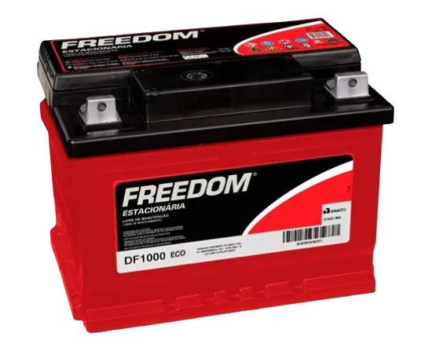
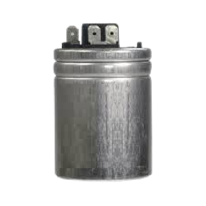
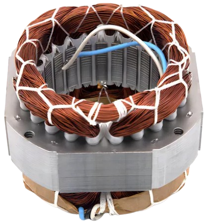

Raio-X do Projeto
DESCRIÇÃO DOS COMPONENTES E SUAS FUNÇÕES NO PROJETO
| Componentes | Descrição | imagem |
|---|---|---|
| Bateria 70Ah | Bateria 70Ah Fornece uma fonte de corrente contínua (12V DC) ao sistema. A capacidade de 70Ah indica que ela pode fornecer 70 amperes por uma hora. Armazena energia e fornece corrente ao circuito para alimentar o motor e o transformador. |  |
| Transformador 12v DC/ 127v AC |
Usamos um transformador 12V AC / 127V AC que é um dispositivo elétrico, utilizado para elevar a tensão de 12V da bateria que está sendo chaveada no primário, para uma tensão de 127V AC |  |
| Capacitor 10 uF |
Um dispositivo que armazena energia elétrica temporariamente e libera em intervalos controlados Ajuda a suavizar as oscilações de corrente e tensão, e estabiliza a saída do circuito, minimizando o ruído elétrico |  |
| Motor 180W 127v |
Motor acionado pela corrente fornecida pela bateria. Ele possui um eixo que gira ao ser energizado. Atua como um motor de entrada que, ao girar,ajuda a gerar energia por meio de acoplamento com ímãs e o estator. | |
| Imãs de Neodímio | Ímãs extremamente potentes, comumente usados em sistemas de geração de energia pela sua força magnética. Geram um campo magnético que induz corrente no estator quando o motor gira. Isso auxilia na geração da corrente alternada. | |
| Estator | Parte fixa de um motor ou gerador, onde são colocados enrolamentos de cobre.Induz a corrente alternada quando exposto ao campo magnético criado pelos ímãs em movimento, facilitando a geração de AC. |  |
| Transistor FGH40N60 |
Componentes semicondutores usados para amplificar ou chavear sinais elétricos.Atuam no controle do fluxo de corrente e ajudam a converter a corrente contínua em pulsos necessários para criar a corrente alternada. |  |
| CI SG 3525 | Circuito integrado responsável por gerar uma onda de oscilação.Controla a frequência da corrente alternada gerada pelo sistema, auxiliando na conversão de DC para AC com um sinal controlado. | |
| Dissipador de calor |
Componente metálico usado para dispersar o calor gerado pelos transistores e outros componentes. Dissipa o calor excessivo gerado durante a operação, mantendo os componentes em temperaturas seguras e evitando superaquecimento.. |  |
| Coller | E utilizado para remover o calor dos dissipadores resfriando os componentes. O ar é puxado através de um dissipador, que retira o calor. | |
| Resistor | Componentes que oferecem resistência ao fluxo de corrente, limitando e controlando a quantidade de corrente que passa. Controlam a quantidade de corrente em cada parte do circuito e protegem os componentes sensíveis ao limitar a corrente elétrica. |  |
| Djuntor 30Ah | O disjuntor é um dispositivo de segurança que protege o circuito contra sobrecargas e curtos-circuitos. Ele monitora a corrente e desarma (desliga) automaticamente caso a corrente ultrapasse o limite seguro, evitando danos aos componentes e riscos de incêndio.. |  |
| Tomada 10Ah | As tomadas são os pontos de conexão onde cargas externas (como aparelhos ou dispositivos) podem ser ligadas para receber a alimentação elétrica. Elas fornecem uma maneira segura e padronizada para conectar e desconectar equipamentos ao sistema. | |
| Medidor de (Corrente/ Voltagem/Hz) | Mede a tensão elétrica em circuitos, corrente elétrica, frequência da corrente alternada. Fornece mediçõesprecisas, essenciais para diagnósticos e manutenção é amplamente utilizado em indústrias, laboratórios e em instalações elétricas |  |
Descrição de Funcionamento
protótipo de geração de energia elétrica opera inicialmente com uma bateria estacionária que fornece corrente contínua (DC). A corrente é regulada por um transistor, que controla a quantidade de carga que flui da bateria para o transformador. Este, por sua vez, converte a corrente contínua em corrente alternada (AC) com o auxilio de transistor . A corrente alternada alimenta um motor elétrico, que transforma a energia elétrica em movimento mecânico. Esse movimento aciona um eixo com ímãs de neodímio, que gira no centro de um estator, gerando assim energia alternada. A energia gerada é então distribuída por duas tomadas, simulando uma onda senoidal, além de contar com uma tomada adicional que fornece ondas quadradas, capazes de alimentar cargas mais potentes.